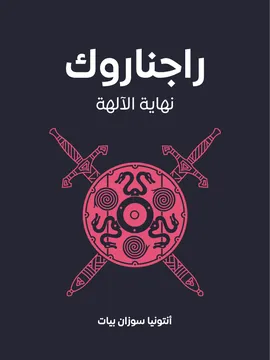

راجناروك: نهاية الآلهة

قراءة عربية أصلية محددة النطاق في الصفحات 17 إلى 22 من ملف PDF المرتبط، وليست تلخيصا كاملا للكتاب. نناقش ما تدعمه هذه المقاطع فقط.
راجناروك: الطفلة النحيلة وكتاب أسجارد
في زمن الحرب كانت الطفلة تعلم بداخلها أن والدها لن يعود، وإن شربت الأسرة كل عام عصير التفاح في نخب عودته؛ وكانت تشعر بيأس لم تكن تعلم أنها تشعر به. وكانت تفكر في السؤال القديم: لماذا يوجد شيء بدلًا من عدم وجوده؟ تلتهم القصص بشراهة، وتقص حكاياتها وهي تسري عبر الحقول عن فرسان جامحين وساحرات شريرات. وعندما صارت أكبر اكتشفت كتاب «أسجارد والآلهة»: مجلد أخضر على غلافه أودين في صيده البري منطلقًا على جواده عبر سماء ملبدة بالغيوم، يراقبه قزم فزع من كهف مظلم. كان كتابًا أكاديميًّا بالألمانية تستخدمه والدتها مصدرًا لامتحاناتها، ومليئًا بنقوش للذئاب والأشباح والنساء السابحات. ولما كانت أسرتها ذات أصول اسكندنافية فهذه قصصها، فأصبح شغفها تقرؤه ليلًا بمصباح تخفيه أسفل الأغطية. وشكلت صخور جبال ريزينجيبريجا وأساطير العمالقة والتنانين خيالها؛ فقد جعلها العمالقة الحجريون ترغب في الكتابة، ورأت وجوههم تحدق فيها من وراء قناع الغاز أثناء التدريب على الغارات الجوية. أما صور الأغاني الوديعة والصلوات التي تتلوها في الكنيسة كل أربعاء فلم تغذ خيالها، بل خدرته.
زاوية وحدود القراءة
قراءة موجزة من ص ١٧ إلى ص ٢٢ من أصل ١٠٦ صفحة، تعرض بداية «نهاية العالم»، لا الكتاب كاملًا.
الطبعة والقراءة
هذه الترجمة العربية صادرة ومتاحة مجانًا بموجب اتفاق قانوني بين مؤسسة هنداوي ودار نشر كانونجيت بوكس ليمتد. حقوق الترجمة محفوظة لمؤسسة هنداوي.
تنزيل PDF المجاني ↓ القراءة والمصدر الرسمي ↗